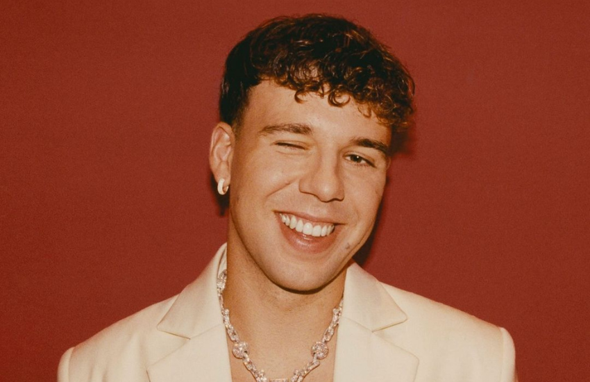
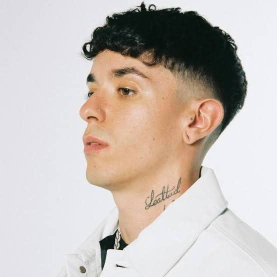

El cantante mas escuchado de estas tres super estrellas Quevedo ya que sera uno de los artistas que estara presente el dia 20 a que estas esperando para venir
como dice el. El baifo si el chiquillo.
.
No te pierdas su proxima actuacion!
El cantante mas escuchado de estas tres super estrellas Quevedo ya que sera uno de los artistas que estara presente el dia 20 a que estas esperando para venir
El cantanteQuevedo (Pedro Luis Domínguez Quevedo), Quevedo cantará en el festival con sus canciones más escuchadas. Estas son algunas de ellas:
La Graciosa
Columbia
Al Golpito
Yo y tu
Jukiar
Te lo vas a perder?
El cantante canario Lucho RK (Emilio Roca Cáceres) es uno de los artistas más top y más escuchado estos ultimos años tambien tiene grandes colavoraciones como por ejemplo con quevedo y la pantera. He puesto una cancion que la cantan los tres artistas Algo va a pasar. No te pierdas su próxima actuación!
Lucho RK cantará en el festival con sus canciones más escuchadas. Estas son algunas de ellas:
Aire
Retrica
Contigo
Algo va a pasar
Algo va a pasar
Te lo vas a perder?

El rapero canario La Pantera (Sergio Aimar Castellano), originario
de Gran Canaria, empezó su carrera profesional en 2020 y ah echo grandes colavoraciones con artistas como por ejemplo quevedo, la pantera
es uno de los mas escuchados ahora mismo la esta reventando.Como dice el Quiro más quiero más
es increible como convina el trap y el reggaeton.
No te pierdas su próxima actuación!
La Pantera actuará en el escenario principal el primer día del festival con sus canciones más escuchadas. Estas son algunas de ellas:
No me guillo v2
Quiero mas
Halo
Piel de cordero
Bane
Te lo vas a perder?